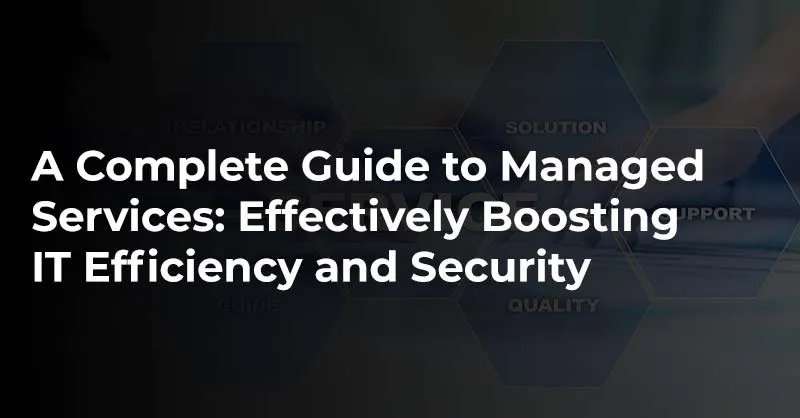

A Complete Guide to Managed Services: Effectively Boosting IT Efficiency and Security
Most companies don't have the people or budget to run their own IT around the clock, and that gap shows up as downtime, security holes and teams stuck firefighting. This guide explains what a managed service provider (MSP) actually takes off your plate, where it pays for itself, and how to tell a good provider from one that will just sell you tickets.
What the article covers
- The problems MSPs solve: thin in-house expertise, the cost of a full IT team, downtime risk and fast-moving cyber threats.
- What you get: continuous monitoring, fixed monthly costs, stronger security, room to scale and access to certified specialists.
- Ten common service types, each with a real-world use case: network, cybersecurity, cloud migration, backup and DR, help desk, compliance and more.
- How to choose a provider: relevant experience, tailored services, clear SLAs, a proactive approach, flexibility and 24/7 support.
- Where the industry is heading: AI-driven automation, stronger threat detection and cloud-first operations.